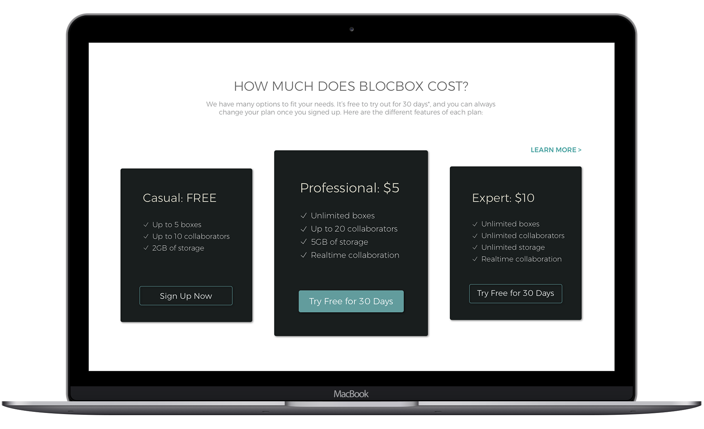

HEATH PLEX FITNESS CENTER
Alecia McMahon
BLOCBOX
SAAS WEB APPLICATION DESIGN
Blocbox is an SaaS web application which allows users to collect information and store it in a single place. A user can create simple documents, store images, bookmark links to websites, and collaborate with others.

ROLE
UX & UI Designer
SOFTWARE
Google Surveys, Balsamiq, Photoshop, Illustrator, Sketch, InVision
PROCESS
Research: User Surveys, Personas, Competitive Analysis, User Stories
Design: Style Guide, Site Map & User Flows, Wireframes, Mockups
Testing: InVision Prototype & Usability Tests
RESEARCH
USER SURVEYS | PERSONAS | STORIES | ANALYSIS
Next, I sent out a survey to both members and non-members. The survey received responses from 12 non-members and six members. Of the non-members surveyed, three did not have any type of gym membership. Based on the findings of the survey along with 3 personal interviews, I analyzed the original site to identify the main pain points the client was experiencing with their site and made sure to prioritize those points through the remainder of my design process.
USER SURVEY HIGHLIGHTS
91.6%
of users work in a collaborative work environment where team-members share documents and edit files together.
67%
of users surveyed said they save content by bookmarking it in their browser. Of the users who preferred bookmarking in their browser, 62.5% said they disliked that they could not access their contect from other browsers.
18-64
the ages of potential blocbox users has a wide range, indicating that the user interface needs to have a look and feel that appeals to multiple generations.
75%
of users said they would prefer to use their Facebook or Twitter account to register and log-in a blocbox account due to the quick-access and eliminating the need to use a password.
COMPETITIVE ANALYSIS
Because there are already a number of competitors for cloud-based, file-sharing web applications, it was important to do a competitive analysis to see where there was an opportunity for blocbox to stand out.
PERSONAS
Based on the user survey results I created 3 outlines of user personas and flows to help meet the needs of the users. I prioritized certain functions to create a minimum viable product.
DESIGN
SITE MAP & USER FLOWS | WIREFRAMES | MOCKUPS
SITEMAP & USER FLOWS
Sitemaps and user flows offered a detailed outline of the functionalities of the site and served as a skeleton to help build out the application successfully.
SOFTWARE: BALSAMIQ & SKETCH
After creating the sitemap and user flows, I used Balsamiq to sketch out low fidelity wireframes before moving on to the high fidelity wireframes using Sketch. My aim in the interface design was to create a layout that would appeal to a wide variety of users and meet users' personal and professional needs.